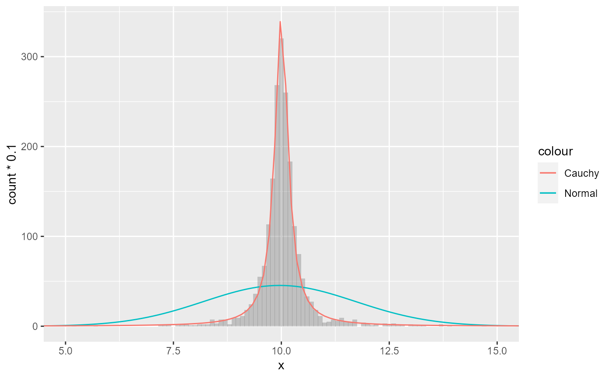

Estimates the parameters of a given distribution and evaluates the probability density function with these parameters. This can be useful for comparing histograms or kernel density estimates against a theoretical distribution.
stat_theodensity( mapping = NULL, data = NULL, geom = "line", position = "identity", ..., distri = "norm", n = 512, fix.arg = NULL, start.arg = NULL, na.rm = TRUE, show.legend = NA, inherit.aes = TRUE )
Arguments
| mapping | Set of aesthetic mappings created by |
|---|---|
| data | The data to be displayed in this layer. There are three options: If A A |
| geom | Use to override the default geom for |
| position | Position adjustment, either as a string, or the result of a call to a position adjustment function. |
| ... | Other arguments passed on to |
| distri | A |
| n | An |
| fix.arg | An optional named list giving values of fixed parameters of the named distribution. Parameters with fixed value are not estimated by maximum likelihood procedures. |
| start.arg | A named list giving initial values of parameters for the named distribution. This argument may be omitted (default) for some distributions for which reasonable starting values are computed. |
| na.rm | If |
| show.legend | logical. Should this layer be included in the legends?
|
| inherit.aes | If |
Value
A Layer ggproto object.
Details
Valid distri arguments are the names of distributions for
which there exists a density function. The names should be given without a
prefix (typically 'd', 'r', 'q' and 'r'). For example: "norm" for
the normal distribution and "nbinom" for the negative binomial
distribution. Take a look at distributions in the
stats package for an overview.
There are a couple of distribution for which there exist no reasonable
starting values, such as the Student t-distribution and the F-distribution.
In these cases, it would probably be wise to provide reasonable starting
values as a named list to the start.arg argument. When estimating a
binomial distribution, it would be best to supply the size to the
fix.arg argument.
By default, the y values are such that the integral of the distribution is
1, which scales well with the defaults of kernel density estimates. When
comparing distributions with absolute count histograms, a sensible choice
for aesthetic mapping would be aes(y = stat(count) * binwidth),
wherein binwidth is matched with the bin width of the histogram.
For discrete distributions, the input data are expected to be integers, or doubles that can be divided by 1 without remainders.
Parameters are estimated using the
fitdist() function in the
fitdistrplus package using maximum likelihood estimation.
Hypergeometric and multinomial distributions from the stats package
are not supported.
Computed variables
- density
probability density
- count
density * number of observations - useful for comparing to histograms
- scaled
density scaled to a maximum of 1
See also
Examples
# A mixture of normal distributions where the standard deviation is # inverse gamma distributed resembles a cauchy distribution. x <- rnorm(2000, 10, 1/rgamma(2000, 2, 0.5)) df <- data.frame(x = x) ggplot(df, aes(x)) + geom_histogram(binwidth = 0.1, alpha = 0.3, position = "identity") + stat_theodensity(aes(y = stat(count) * 0.1, colour = "Normal"), distri = "norm", geom = "line") + stat_theodensity(aes(y = stat(count) * 0.1, colour = "Cauchy"), distri = "cauchy", geom = "line") + coord_cartesian(xlim = c(5, 15))# A negative binomial can be understood as a Poisson-gamma mixture df <- data.frame(x = c(rpois(500, 25), rpois(500, rgamma(500, 5, 0.2))), cat = rep(c("Poisson", "Poisson-gamma"), each = 500)) ggplot(df, aes(x)) + geom_histogram(binwidth = 1, aes(fill = cat), alpha = 0.3, position = "identity") + stat_theodensity(aes(y = stat(count), colour = cat), distri = "nbinom", geom = "step", position = position_nudge(x = -0.5)) + stat_summary(aes(y = x, colour = cat, x = 1), fun.data = function(x){data.frame(xintercept = mean(x))}, geom = "vline")